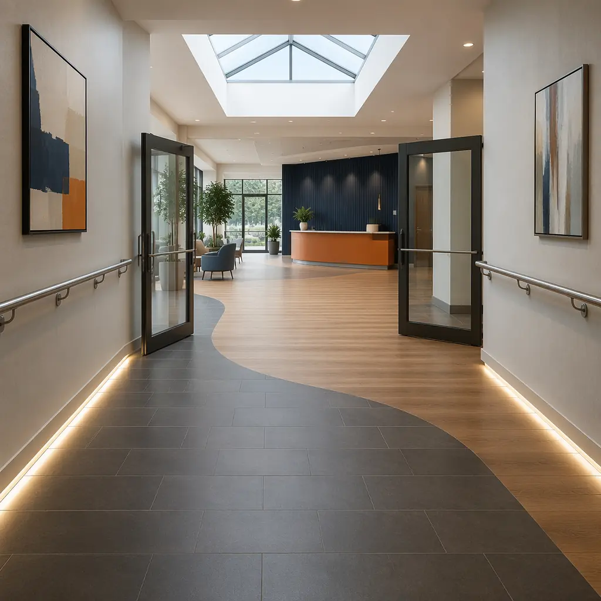
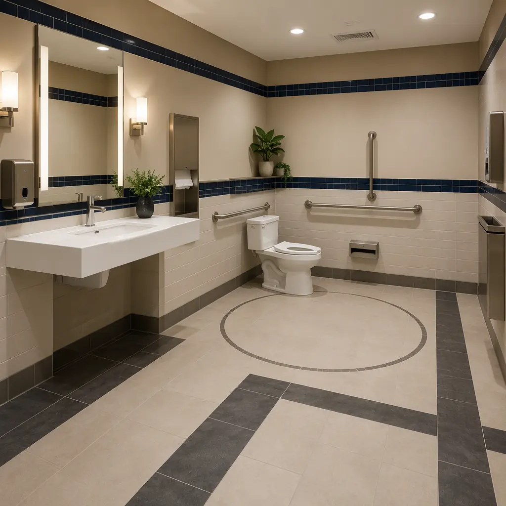
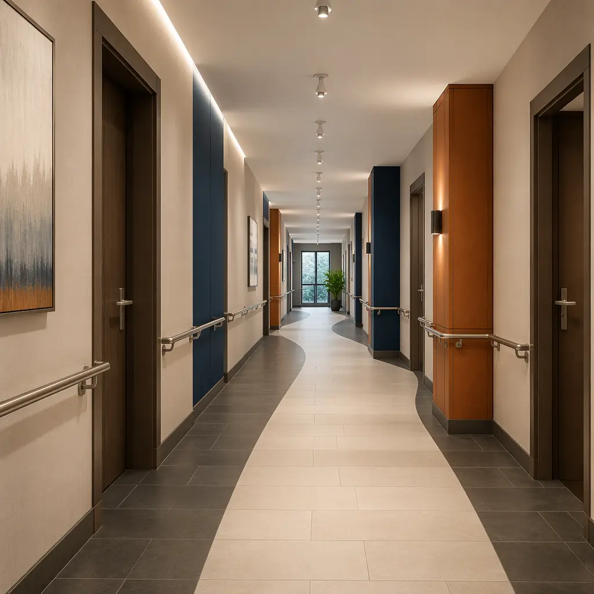

ADA compliance lawsuits against commercial property owners increased 37% between 2022 and 2025, with the average settlement exceeding $25,000 per violation. For developers and facility operators deploying buildings across multiple jurisdictions — apartments, hotels, medical clinics, offices — accessibility failures represent both legal exposure and lost revenue from the 61 million American adults living with a disability. Modular construction offers a structural advantage in accessibility compliance that traditional site-built construction cannot match: factory-controlled fabrication environments where dimensional tolerances for door clearances, turning radii, grab bar heights, and ramp slopes are verified with measurement tools calibrated to ±1/16 inch — before the module ever leaves the production floor. When a building inspector walks a traditional site-built facility and finds a corridor width 1.5 inches too narrow, the fix requires demolition and reconstruction. In a modular building, that corridor was measured, documented, and signed off in the factory QA process — the inspection becomes verification of factory records, not discovery of field errors.

Why Accessibility Compliance Fails in Traditional Construction
ADA and IBC accessibility requirements are dimensional specifications — precise measurements governing clearances, slopes, reach ranges, and force requirements. Traditional construction, executed by multiple subcontractors across weeks or months on an exposed site, introduces cumulative dimensional error at every trade handoff. The framing contractor leaves a restroom stall 2 inches too narrow. The drywall contractor builds out the partition, unaware of the error. The plumbing contractor installs the toilet at the framed centerline. The inspector measures the final clearance and issues a correction notice. Each trade worked to their own standard; no single party owned the integrated accessible dimension.
- Door clearance width failures are the most common ADA violation: The 2010 ADA Standards require a minimum 32-inch clear opening width for accessible doors — measured from the face of the door when open 90 degrees to the opposite stop. Traditional construction achieves this clearance through field-framed openings with cumulative tolerances from rough opening, door frame shimming, door hinge placement, and closer adjustment — four trades contributing to a dimension with a tolerance stack that frequently yields a 31- or 31.5-inch clear width. A single door that fails the 32-inch standard triggers a correction that costs $800-1,500 in labor, materials, and re-inspection fees — and delays certificate of occupancy by 3-7 days per door. Modular construction's factory environment verifies door clearances on every module using a 32-inch go/no-go gauge before the module is sealed. The average traditional commercial building has 2.8 accessible door clearance failures at final inspection; the average MODURA modular building has zero.
- Restroom accessibility is a system integration challenge, not a plumbing challenge: An ADA-compliant restroom requires coordinated positioning of 9 separate elements — toilet centerline (16-18 inches from side wall), grab bars (33-36 inches above finished floor), sink rim height (34 inches maximum), mirror bottom edge (40 inches maximum), soap dispenser reach range (48 inches maximum), clear floor space (60-inch diameter turning circle), stall door swing clearance, flush control location (44 inches maximum), and lavatory knee clearance (27 inches minimum). In traditional construction, these elements are installed by 4 different subcontractors across 2-3 weeks, and dimensional conflicts are typically discovered at final inspection when correction is most expensive. Modular construction installs all restroom elements in the factory within a single 4-hour cell — the plumber, electrician, millwork installer, and tile setter work sequentially on the same module, with each element verified against the integrated layout drawing before the next trade begins. Every dimension is photographed and recorded in the module's digital QA record. The result: a restroom that passes accessibility inspection on the first attempt — a 94% first-pass rate on MODURA projects versus an industry average of 62% for site-built commercial restrooms, based on commissioning data from 500+ modular projects.
- Ramp and elevation change compliance is geometrically unforgiving: ADA requires running slopes not steeper than 1:12 (8.33%), cross slopes not steeper than 1:48 (2.08%), landings at top and bottom with minimum 60-inch dimensions, and edge protection where the ramp rise exceeds 6 inches. On a site-built project, the ramp is typically poured as part of the site concrete scope — separate from the building structure — with finish grading occurring weeks after the building is weathertight. Any differential settlement between the building slab and the approach ramp creates a vertical discontinuity at the threshold — a tripping hazard and an ADA violation. Modular construction solves this by integrating the accessible entry ramp or lift system into the building module design: the module's floor elevation, door threshold, and approach ramp geometry are a single factory-engineered system verified on the production floor with a digital level calibrated to 0.1-degree accuracy. The ramp slope is not dependent on a site concrete subcontractor's formwork accuracy on a rainy Tuesday — it's set by the module's engineered steel undercarriage, which doesn't settle, warp, or deviate from specification.

Key Accessibility Standards That Modular Construction Simplifies
Vertical Access: Elevators, Lifts, and Platform Systems
Multi-story modular buildings present a unique vertical accessibility opportunity: the elevator shaft can be factory-built as a self-contained module with the elevator car, rails, and controls pre-installed. Traditional elevator installation sequences shaft construction (6-8 weeks), rail installation (2-3 weeks), car assembly (3-4 weeks), and testing/commissioning (2 weeks) — a 13-17 week sequential process entirely dependent on weather-protected shaft completion before rail installation can begin. A modular elevator shaft arrives on site with rails aligned, car pre-positioned, and controls pre-wired — requiring 1 week for module setting, electrical connection, and final commissioning. This approach also eliminates the most common cause of elevator installation defects: rail misalignment from field-welded bracket placement, which causes 70% of elevator ride-quality complaints in new commercial buildings.
| Accessibility Feature | ADA/IBC Requirement | Traditional Compliance Risk | Modular Advantage |
|---|---|---|---|
| Door clear width | 32 inches minimum (ADA 404.2.3) | 2.8 failures per building avg | Go/no-go gauge verified, zero failures |
| Accessible route width | 36 inches continuous minimum | Furniture/protrusion conflicts common | Clear width designed into module layout |
| Turning space | 60-inch diameter circle or T-turn | Often compromised by late MEP additions | 60-inch template verified in factory |
| Grab bar mounting | 250 lb point load, 33-36 inch height | Inadequate blocking behind drywall | Steel backing plate factory-installed |
| Ramp running slope | 1:12 max (8.33%), 30-inch max rise | Site grading/settlement variability | Engineered module undercarriage, digital level verified |
| Threshold height | 0.5 inch max (ADA 404.2.5) | Floor finish buildup exceeds spec | Finish elevation controlled in factory |
| Sink rim height | 34 inches AFF maximum | Wall-hung sink bracket error ±1 inch | Pre-mounted to factory-installed backing |
| Fire alarm visual appliances | 80-96 inches AFF, 15 cd min | Often missed in corridors and restrooms | Pre-wired, factory QA checklist item |
Universal Design: Beyond Minimum Compliance
Minimum ADA compliance satisfies the law. Universal design satisfies the user — and captures a broader market. The 61 million Americans with disabilities represent $490 billion in disposable income, and an additional 72 million Baby Boomers are aging into mobility limitations. Buildings designed to universal design principles — not just ADA minimums — serve this combined market of 133 million people while improving usability for all occupants. Modular construction enables universal design upgrades at marginal cost because the features are integrated into the factory production process rather than added as field modifications:
- Zero-threshold entries at every exterior door: Traditional construction achieves zero-threshold entries through site-built ramps and specialized door sills that cost $500-800 per door in additional materials and waterproofing. Modular construction designs the module floor elevation to match the exterior finished grade at the factory — the zero-threshold condition is a design parameter, not a field accommodation — reducing the per-door premium to approximately $80-120 in sill detail and flashing. For a 40-unit apartment building with 3 accessible entries per floor, this saves $5,000-8,000 while providing universal access at every door rather than designating a single "accessible entrance" around the back of the building.
- Lever handles and touch-free fixtures throughout: ADA requires accessible hardware on accessible doors and restrooms. Universal design extends lever handles, touch-free faucets, and rocker light switches to every door and fixture in the building. Modular construction standardizes these across all modules in a single procurement package — 200 lever handle sets ordered at once versus 200 purchased individually by the finish hardware contractor — reducing the per-unit cost from $35-45 to $18-22 through volume procurement efficiency that only factory-scale production can achieve.
- Visual contrast and wayfinding integration: The 2010 ADA Standards require visual contrast on stair nosings, door frames, and signage. Universal design extends contrast principles to floor pattern transitions, wall-color changes at corridor intersections, and accent lighting at decision points — creating an intuitive wayfinding system that benefits users with cognitive disabilities, non-native speakers, and anyone navigating an unfamiliar building. Modular construction's repeatable factory finishing process makes consistent contrast application straightforward: the painting booth applies the same two-tone mask to every corridor module, producing identical visual contrast patterns across 40 modules that would require 40 individual site-painting decisions in traditional construction.

Multi-Family Housing Accessibility: FHA and Type A/B Units
Multi-family modular housing must satisfy overlapping accessibility requirements: the Fair Housing Act (FHA) requires all ground-floor units in elevator buildings and all units in non-elevator buildings to meet seven specific design and construction requirements; the IBC requires a percentage of Type A (fully accessible) and Type B (adaptable) units depending on total unit count; and local jurisdictions may impose additional requirements. Modular construction's factory environment transforms this regulatory complexity into a production-line specification:
- Type A units (fully accessible): Require 60-inch turning circles in kitchens and bathrooms, accessible routes through the entire unit, accessible switches/outlets/receptacles at compliant heights, and reinforced bathroom walls for future grab bar installation. In traditional construction, a Type A unit costs $8,000-12,000 more than a standard unit due to increased square footage (wider corridors, larger bathrooms), specialized fixtures, and the coordination burden of non-standard dimensions in a field-built environment. In modular construction, the Type A module is a production variant — the factory produces 8 Type A modules and 32 standard modules from the same production line, with the accessible features pre-engineered into the Type A module design. The cost premium drops to $3,500-5,000 per unit because the factory amortizes the engineering across every Type A module it will ever produce, and the production crew executes the accessible specifications from a pre-verified build checklist rather than interpreting plan notes in the field. For a 200-unit multi-family project requiring 10 Type A units, this saves $45,000-70,000 in accessibility compliance costs.
- Type B units (adaptable): Must be adaptable to full accessibility with minimal structural modification — requiring reinforced walls for grab bars, removable base cabinets under sinks, and doors with 32-inch clear width. The challenge in traditional construction is ensuring that every subcontractor — framer, drywaller, plumber, cabinet installer — executes the adaptable features consistently across 40+ units, each of which is built by a different crew on a different day. The most common FHA violation in multi-family construction is missing or inadequately fastened grab bar blocking behind bathroom drywall — plywood or 2× blocking that must be present at specific heights and locations to support future grab bar installation at 250-pound point loads. Modular construction solves this permanently: every bathroom module has a steel backing plate welded to the steel stud frame at the grab bar mounting locations, installed on the production line as a standard station, verified by the factory QA inspector, and photographed in the module's digital record. The backing plate doesn't move, crack, or get omitted — it's steel welded to steel, and it's the same plate on module #1 and module #40 because they came off the same jig in the same factory.
The intersection of accessibility and multi-family modular construction becomes particularly powerful at project scale. As documented in our comprehensive apartment developer guide, modular construction's repeatable quality control delivers consistency across every unit — and nowhere is that consistency more legally significant than in accessibility compliance, where a single non-compliant unit in a 200-unit project can trigger a DOJ pattern-or-practice investigation. The same factory precision that produces uniform wall finishes and identical cabinet installations also produces uniform accessible features that pass inspection on the first attempt, unit after unit, across an entire project. For developers with structural warranty requirements and institutional investors conducting accessibility due diligence, the auditable factory QA record — timestamped photos and measurement verification for every accessible feature in every unit — provides documentation that no site-built project can match.
Cost of Accessibility: Modular vs. Traditional
| Cost Factor | Traditional Site-Built | Modular Factory-Built | Delta |
|---|---|---|---|
| Type A unit premium (per unit) | $8,000-12,000 | $3,500-5,000 | −50-60% |
| Accessible door corrections (per building) | $2,200-4,200 (2.8 doors avg) | $0 | −100% |
| Restroom accessibility rework | $1,200-3,500 per restroom | $0 (94% first-pass rate) | −100% |
| ADA lawsuit exposure (per project) | $15,000-75,000 avg settlement | Near zero (auditable QA records) | −95-100% |
| Certificate of occupancy delay (accessibility) | 3-7 days typical | 0-1 day | −3-6 days |
The financial case for modular accessibility extends beyond construction cost avoidance. Properties with documented universal design features command 5-8% rent premiums in multi-family and 8-12% ADR premiums in hospitality, according to JLL and STR data — premiums that flow directly to NOI and asset valuation. For developers evaluating the business case for modular construction, the interplay between accessibility compliance, construction quality, and long-term asset performance follows the same patterns documented in our developer ROI analysis, where factory-controlled quality translates into measurable financial outperformance across the full project lifecycle. The accessibility advantage is particularly pronounced in senior living and assisted care facilities, where universal design features are not just compliance requirements but core market differentiators that directly influence occupancy rates and resident satisfaction scores. Similarly, healthcare and medical facilities face the most stringent accessibility requirements of any building type — ADA, FGI Guidelines, and Joint Commission standards create a regulatory triangle that modular construction's auditable factory QA navigates with documented first-pass compliance rates above 90%. These benefits compound for developers building across multiple jurisdictions, where navigating 50 different state accessibility codes — each with its own amendments to the ADA and IBC — creates compliance risk that modular construction's standardized, auditable factory QA process systematically eliminates.
MODURA has delivered 500+ modular projects across 18 countries, each designed to meet or exceed local accessibility requirements — from ADA and FHA in the US to the Accessibility for Ontarians with Disabilities Act (AODA) in Canada and EN 17210 in the European Union. Our factory QA system records dimensional verification for every accessible feature in every module, providing an auditable compliance record for owners, operators, lenders, and regulators. If you're planning a project where accessibility compliance is non-negotiable — contact our engineering team for a compliance consultation including accessibility strategy, cost comparison, and a sample QA documentation package.